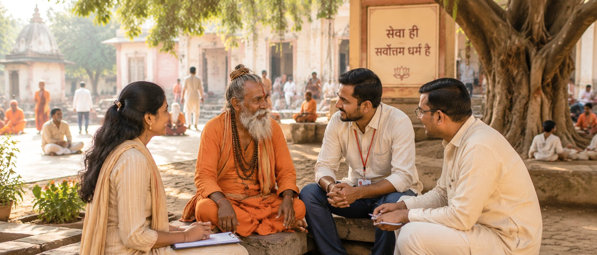
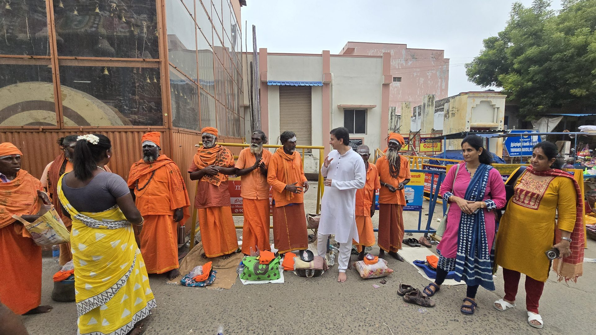
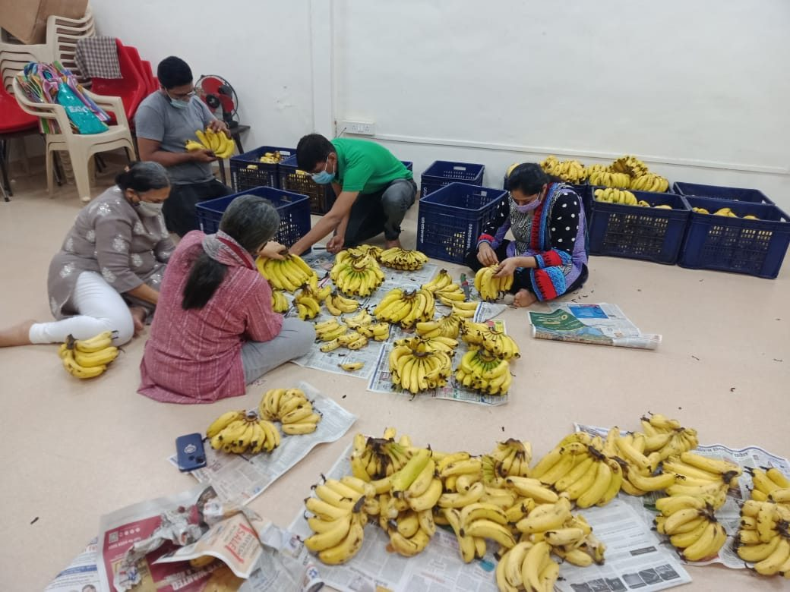
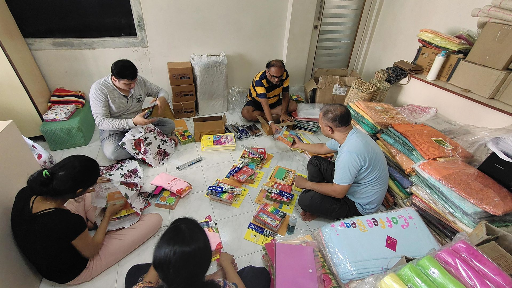

Most donors begin here

Anna Daan
Food is the most immediate act of compassion. Your contribution becomes a meal for devotees, seekers, volunteers and those in need.
Yes, I Want To Offer Anna Daan →
Special Occasion Daan
Turn birthdays, anniversaries, festivals and milestones into acts of seva. Share your blessings with those who need food, care and support.
Yes, I Want To Share My Celebration Through Seva →
Sadhu & Sanyasi Seva
Sadhus and Sanyasis renounce everything to keep the spiritual fire of Sanatan Dharma alive. Your daan provides them food, healthcare and dignity.
Support The Living Pillars Of Dharma →
Brahman Seva — Ved Rakshak
Brahmans quietly preserve the Ved, mantra, rituals and Dharma that protect our families and society.
Preserve Sanatan Knowledge →
Bal Seva
Many children dream with empty stomachs and torn notebooks. Your daan can give them food, education, healthcare and the courage to dream again.
Make A Child's Future Better →
Orphan Seva
Some children have lost the loving embrace of parents. Your daan can provide food, shelter, education and the warmth of belonging.
Support An Orphan Child →Divyang Seva
Many specially abled individuals face daily challenges. Your daan can provide mobility support, healthcare and opportunities for independence.
Support A Divyang Life →
Suvasini Seva
In Sanatan Dharma, a married woman is revered as a living embodiment of Shakti, prosperity and auspiciousness.
Honour Divine Shakti →
Karuna Seva
Support food, education, healthcare and essential care for families facing hardship with dignity.
Serve The Needy →
Elder Care Seva
Support food, healthcare, warmth and care for senior citizens. Help elders live with dignity, comfort and respect.
Support Elder Care →
Aarogya Seva
Help provide medical care, medicines, holistic healing and wellness support to those facing illness and hardship.
Support Healing →
Guru Daan
Brahmarishi Acharya Upendra Ji's teachings have brought clarity, healing and spiritual direction to countless seekers.
Support Guru Karya Today →
Gau Seva
Serve Gau Mata through food, shelter, medical care and protection. Your seva preserves Dharma and brings blessings.
Serve Gau Mata →
Gyan Daan — Books
Help print and distribute life-transforming books based on Brahmarishi Acharya Upendra Ji's wisdom.
Spread Spiritual Wisdom →
Bhoomi Daan
Contribute towards land for a new Antar Yog Ashram where seekers can experience sadhana and inner transformation.
Build A Sacred Legacy →Gurukul Daan
The Antar Yog Gurukul currently stands as a rented space. Your daan can help make this sacred space permanent.
Help Secure The Gurukul →Guru Seva
Not all daan is monetary. Offer your abilities towards Guru karya and become part of a living spiritual mission.
Offer Seva →